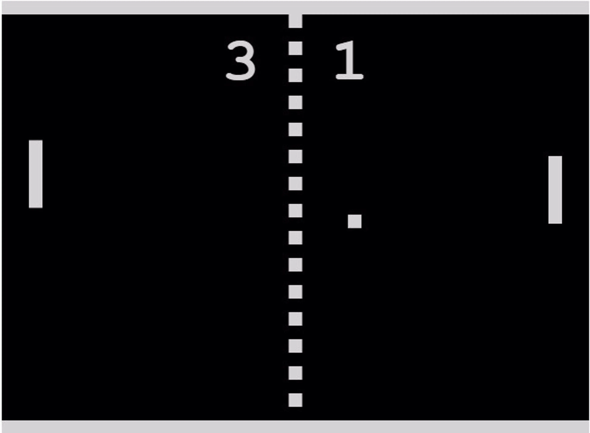
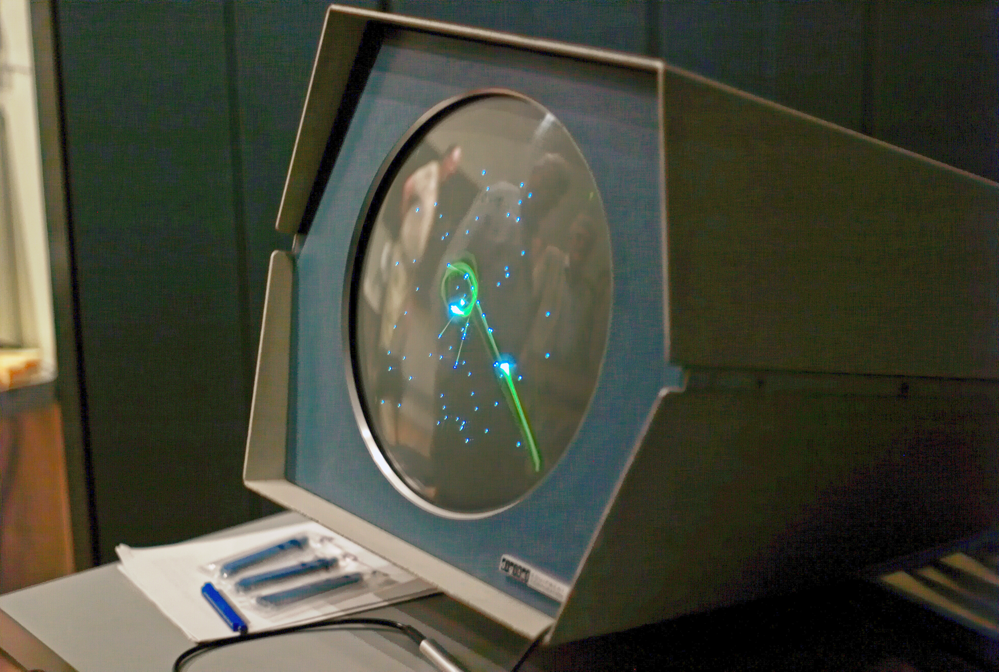
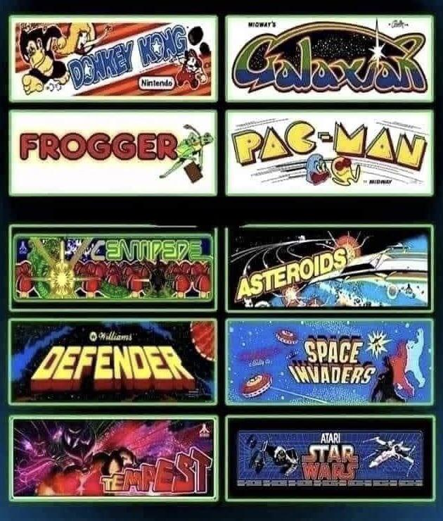
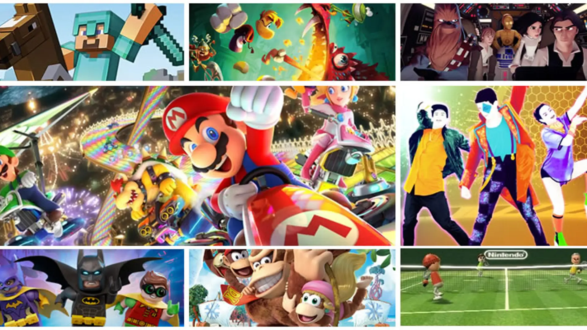

Historia de los Videojuegos
La historia de los videojuegos comenzó en los años 50 y 60 como simples experimentos tecnológicos. Uno de los primeros videojuegos reconocidos fue "Tennis for Two" (1958), seguido por "Spacewar!" (1962), creado por estudiantes del MIT.


En 1972, nació la primera consola comercial: la Magnavox Odyssey. Ese mismo año, Atari lanzó el famoso Pong, uno de los primeros éxitos arcade que popularizó el entretenimiento digital en las salas recreativas.
Durante los años 80, los videojuegos vivieron su primer gran auge con consolas como la Atari 2600 y juegos icónicos como Pac-Man, Donkey Kong y Space Invaders. Nintendo revolucionó el mercado en 1985 con la llegada del NES (Nintendo Entertainment System) y su personaje estrella: Mario.


Los años 90 trajeron avances en gráficos y jugabilidad. Surgieron consolas como la Super Nintendo, Sega Genesis y más adelante la PlayStation, con títulos en 3D como Final Fantasy VII y Tomb Raider.
A partir del 2000, la industria creció enormemente con consolas más potentes como la PlayStation 2, Xbox y GameCube. El juego en línea, los gráficos realistas y las experiencias inmersivas cambiaron la forma de jugar.
Hoy en día, los videojuegos son parte de la cultura global, con comunidades enormes, deportes electrónicos (eSports), realidad virtual, y plataformas como PC, móviles y servicios en la nube. ¡Y la evolución sigue!
